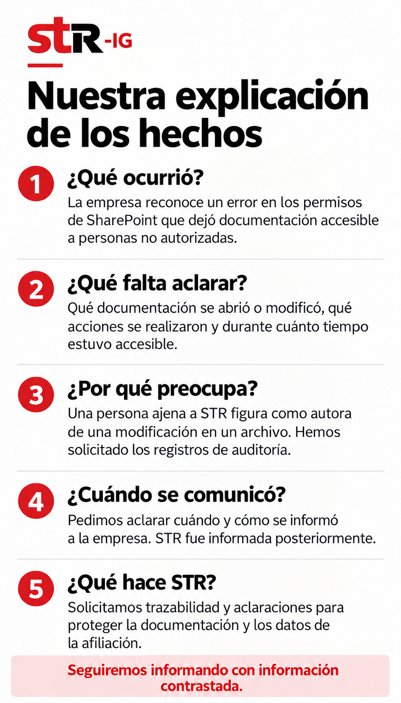

Leer explicación en texto
¿Qué ocurrió?
La empresa reconoce un error en los permisos de SharePoint que dejó documentación accesible a personas no autorizadas.
¿Qué falta aclarar?
Qué documentación se abrió o modificó, qué acciones se realizaron y durante cuánto tiempo estuvo accesible.
¿Por qué preocupa?
Una persona ajena a STR figura como autora de una modificación en un archivo. Hemos solicitado los registros de auditoría.
¿Cuándo se comunicó?
Pedimos aclarar cuándo y cómo se informó a la empresa. STR fue informada posteriormente.
¿Qué hace STR?
Solicitamos trazabilidad y aclaraciones para proteger la documentación y los datos de la afiliación.
Seguiremos informando con información contrastada.